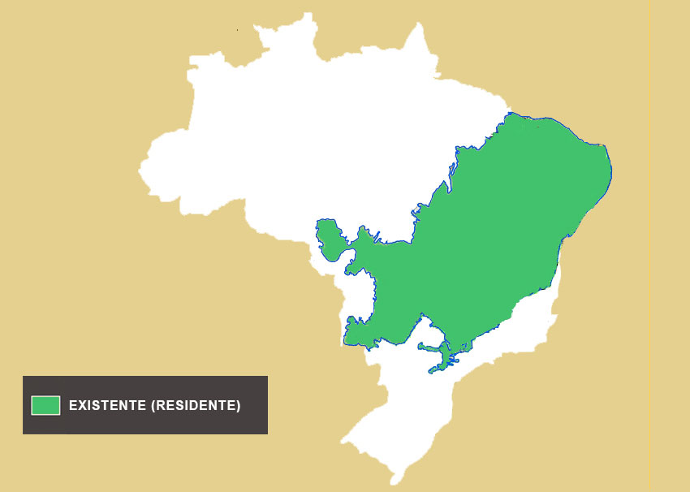

Nome Científico:Conepatus semistriatus (Linnaeus, 1758)
Nomes Populares: Conhecido também como "jeratataca", "tamanduá-bandeira-de-pintas" e "tatu-de-pelo-branco"
Classificação Biológica
Domínio: Eukaryota
Reino: Animalia
Filo: Chordata
Classe: Mammalia
Ordem: Pilosa
Família: Mephitidae
Gênero: Conepatus
Espécie: C. semistriatus
Nutrição Geral e Hábitos Alimentares
Tipo de Nutrição: Heterotrófico
A jeratataca é um onívoro com uma dieta variada que inclui insetos, pequenos vertebrados, frutas e vegetação. Ela usa seu olfato apurado para encontrar alimentos, especialmente insetos enterrados no solo.
Morfologia
Pelagem e Corpo A pelagem da jeratataca é predominantemente preta com manchas brancas ou amarelas ao longo do corpo, especialmente na parte superior. O corpo é robusto e alongado, com uma cauda longa e espessa que ajuda no equilíbrio. Possui uma cabeça pequena com orelhas curtas e um focinho alongado adaptado para escavação e alimentação. Órgãos Respiratórios O aparelho respiratório da jeratataca inclui narinas, fossas nasais, cavidade nasal, seios paranasais, faringe, laringe, traqueia e pulmões. Os pulmões são adaptados para uma vida relativamente ativa e escavadora. Patas As patas possuem garras longas e afiadas, adaptadas para escavação e movimentação no solo.
Comportamento
A jeratataca é um animal solitário e principalmente noturno. É conhecido por sua habilidade de escavar e procurar alimento no solo. Tem um comportamento defensivo e pode liberar um forte odor de suas glândulas anais quando ameaçado. A jeratataca é também uma boa escaladora e nadadora, embora prefira ambientes terrestres.
Ocorrência
A jeratataca é encontrada na América do Sul, principalmente em áreas de cerrado e florestas. Sua distribuição abrange países como Brasil, Argentina, Paraguai e Uruguai. Prefere habitats de vegetação densa e áreas abertas onde possa escavar e procurar alimento.
Mapa de Ocorrência

Reprodução
Sistema de Acasalamento: A jeratataca tem um sistema de acasalamento solitário, com encontros entre machos e fêmeas ocorrendo principalmente durante a época de reprodução. Reprodução ao Longo do Ano: A reprodução pode ocorrer em qualquer época do ano, dependendo das condições ambientais e da disponibilidade de alimento. Gestação: A gestação dura cerca de 60 a 70 dias. Ninhadas: As fêmeas geralmente dão à luz de dois a quatro filhotes por ninhada. Os filhotes nascem em um estágio de desenvolvimento inicial e dependem da mãe para alimentação e cuidados até estarem mais maduros.